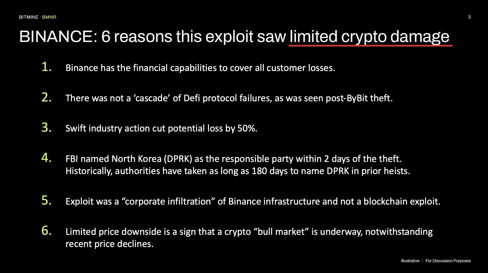
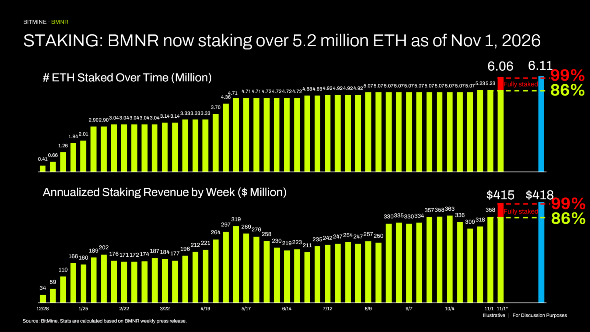
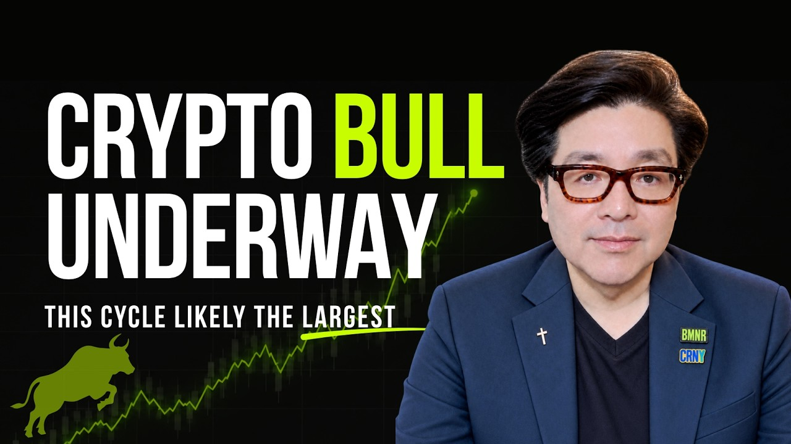

NYSE: BMNR | BMNP
톰 리 “바이낸스 해킹에도 시장 반응 차분… 크립토 업계가 강해졌다는 6가지 신호”
원문: 2026년 11월 2일 Bitmine Immersion Technologies 보도자료(투자자 업데이트 이메일). 원제 “Bitmine sees 6 reasons this recent Binance theft is a sign of crypto industry strength”.
“지난주 후반 바이낸스가 해킹을 당해 고객 자금 63억 달러($6.3 billion)가 도난당했습니다. 바이낸스와 여러 언론 보도에 따르면, 이번 공격은 한 외부 협력업체 인력이 바이낸스의 사내 인프라에 침투한 데서 비롯됐습니다. FBI는 북한(DPRK)을 범인으로 지목했습니다. 끔찍한 일이지만, 제 생각에는 크립토 시장의 반응이 비교적 차분했다는 점이 매우 긍정적입니다. 특히 과거 대규모 크립토 도난 사건 때의 시장 반응과 비교하면 더욱 그렇습니다.”
비트마인의 토머스 ‘톰’ 리 회장은 “지난주 후반 바이낸스가 해킹을 당해 고객 자금 63억 달러($6.3 billion)가 도난당했습니다. 바이낸스와 여러 언론 보도에 따르면, 이번 공격은 한 외부 협력업체 인력이 바이낸스의 사내 인프라에 침투한 데서 비롯됐습니다. FBI는 북한(DPRK)을 범인으로 지목했습니다. 끔찍한 일이지만, 제 생각에는 크립토 시장의 반응이 비교적 차분했다는 점이 매우 긍정적입니다. 특히 과거 대규모 크립토 도난 사건 때의 시장 반응과 비교하면 더욱 그렇습니다.”라고 밝혔습니다.
리 회장은 이어 “2025년 2월에는 바이빗(ByBit)도 북한의 해킹(방식은 이번과 매우 달랐습니다)으로 고객 크립토 15억 달러($1.5 billion)를 도난당했습니다. 바이빗 도난이 알려진 당일 ETH는 8% 떨어졌고, 일주일 만에 20% 하락했습니다. 반면 바이낸스 도난이 공개된 뒤 ETH는 4% 하락하는 데 그쳤습니다. 도난 규모가 약 4배인데도 시장 반응은 훨씬 차분했다고 봅니다”라고 말했습니다.
리 회장은 “바이낸스 도난에 대한 시장 반응이 차분했던 이유는 6가지로 설명할 수 있다고 봅니다.
- 바이낸스는 고객 손실 전액을 보전할 재무 능력이 있습니다.
- 바이빗 도난 이후와 같은 디파이(DeFi) 프로토콜의 연쇄 붕괴가 일어나지 않았습니다.
- 업계의 신속한 대응으로 잠재 손실이 50% 줄었습니다.
- FBI가 도난 발생 2일 만에 북한(DPRK)을 책임 주체로 지목했습니다. 과거 해킹 사건에서는 당국이 북한을 지목하기까지 길게는 180일이 걸렸습니다.
- 이번 공격은 블록체인 자체의 취약점이 아니라 바이낸스 인프라에 대한 ‘기업 침투’였습니다.
- 최근의 가격 하락에도 불구하고 하락 폭이 제한적이었다는 점은 크립토 ‘강세장’이 진행 중이라는 신호입니다.
이를 종합하면, 크립토 업계가 점점 더 회복력을 갖추고 금융 인프라를 겨냥한 국가 차원의 공격도 흡수할 수 있게 되었다는 신호라고 봅니다”라고 밝혔습니다.

비트마인은 지난 한 주 동안 8,573 ETH를 매입했습니다. 2025년 6월 30일 ETH 트레저리 전략을 시작한 이후 매주 빠짐없이 ETH를 사들였으며, 회사는 이러한 꾸준한 매입 실적이 전 세계 상장사 가운데 유례가 없다고 설명합니다. 비트마인은 여전히 이더리움 트레저리 1위, 전 세계 트레저리 2위 자리를 지키고 있습니다.

주간 트레저리 하이라이트
트레저리
스테이킹
크립토 보유 현황은 2026년 11월 1일 오후 4:00(미 동부시간, 한국시간 11월 2일 오전 6:00) 기준이며, ETH는 코인베이스 가격 $2,261로 평가했습니다. 스테이킹 매출은 7일 수익률 3.03%를 연율화한 예상치입니다.
보도자료 전문 보기 →최신 회장 메시지 · 2026년 10월 7일

톰 리 회장의 10월 메시지가 공개되었습니다. 원본 이메일의 ‘영상 보기(Watch the video)’ 링크에서 시청하실 수 있습니다.
최신 프레젠테이션 보기 →법적 고지 (요약)
- 본 이메일은 정보 제공 목적으로만 작성되었으며, 증권의 매도 청약이나 매수 권유가 아니고 투자·재무·세무·법률 자문으로 해석되어서는 안 됩니다.
- 투자 결정 전 미국 SEC에 제출된 Form 10-K, 10-Q 등 비트마인의 공시 자료(www.sec.gov)를 검토하고 재무·법률 전문가와 상담하시기 바랍니다.
- 본 자료에는 1995년 미국 증권민사소송개혁법상 ‘미래예측진술’이 포함되어 있습니다. 주요 내용: (i) ETH 총공급량 5% 확보 목표(‘5%의 연금술’ 이니셔티브), (ii) 매주 이어지는 ETH 매입과 세계 최대 ETH 트레저리 지위를 포함한 디지털 자산 축적·트레저리 전략, (iii) 규모 확대 기준 연간 약 4억 1,500만 달러($415 million)의 ETH 스테이킹 보상과 현재 스테이킹 물량 기준 연간 약 3억 5,800만 달러($358 million)의 스테이킹 매출 전망 등 스테이킹 운영, (iv) 기관 투자자·수탁 기관·생태계 파트너 대상 MAVAN 확장, (v) 크립토 강세장이 진행 중이라는 견해와 바이낸스 도난에 대한 시장 반응의 의미·크립토 업계의 회복력에 관한 견해 등 시장 상황에 대한 경영진의 판단, (vi) GENIUS Act와 SEC ‘Project Crypto’가 금융 서비스에 미칠 잠재적 영향에 대한 견해, (vii) 보유 크립토·현금·유가증권·‘문샷’ 자산의 가치에 관한 진술.
- 이러한 진술은 경영진의 현재 기대와 가정에 근거하며, Form 10-K의 위험 요인 등으로 인해 실제 결과가 크게 달라질 수 있습니다. 회사는 법령상 요구되는 경우를 제외하고 이를 갱신할 의무가 없습니다.